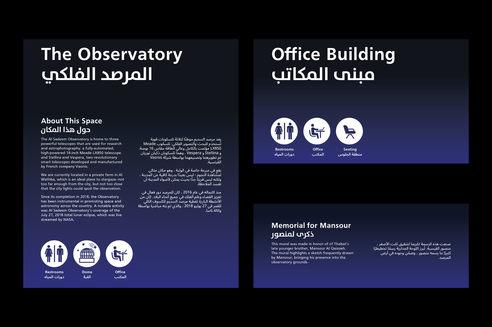
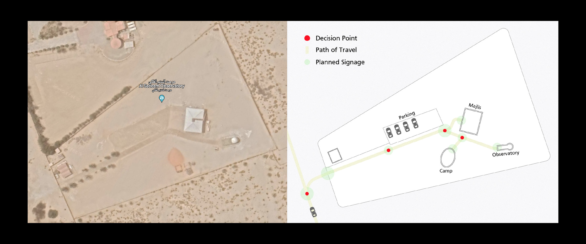
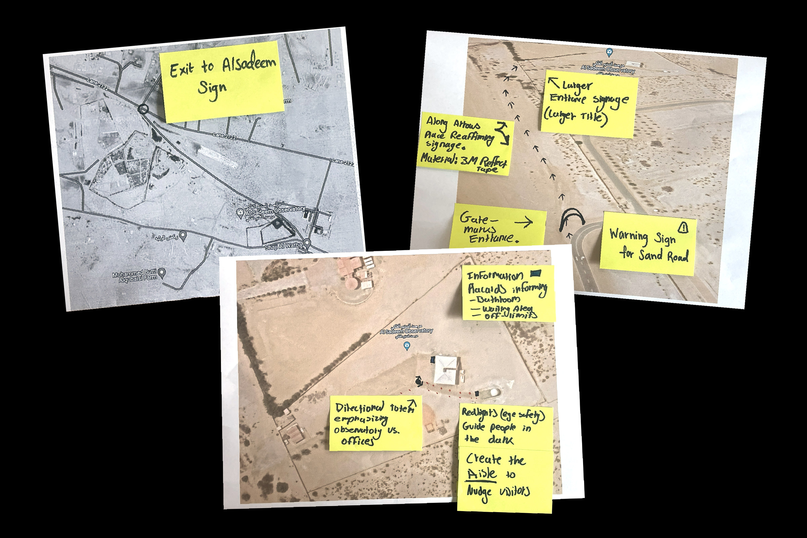
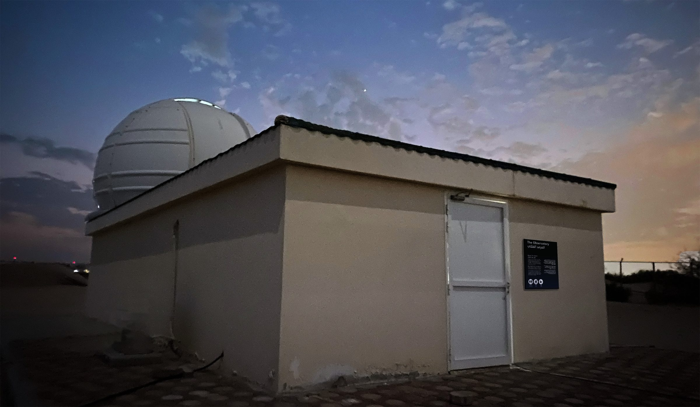
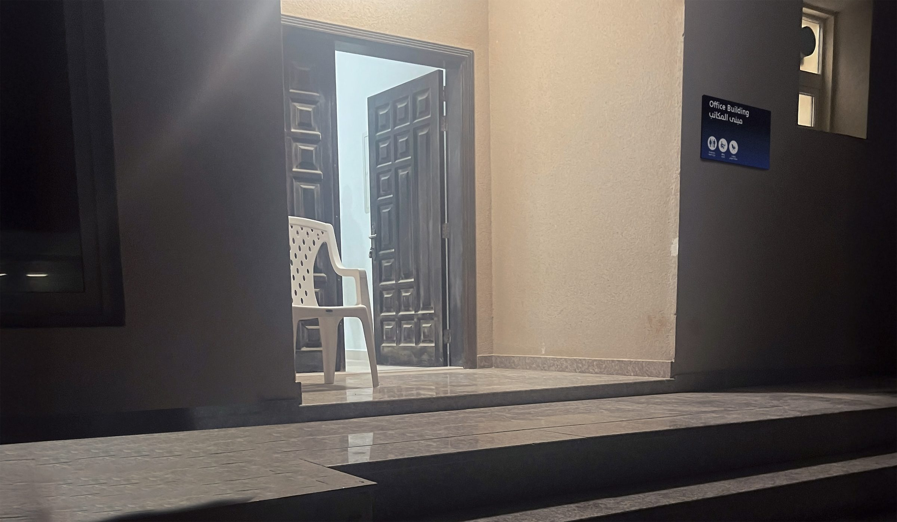
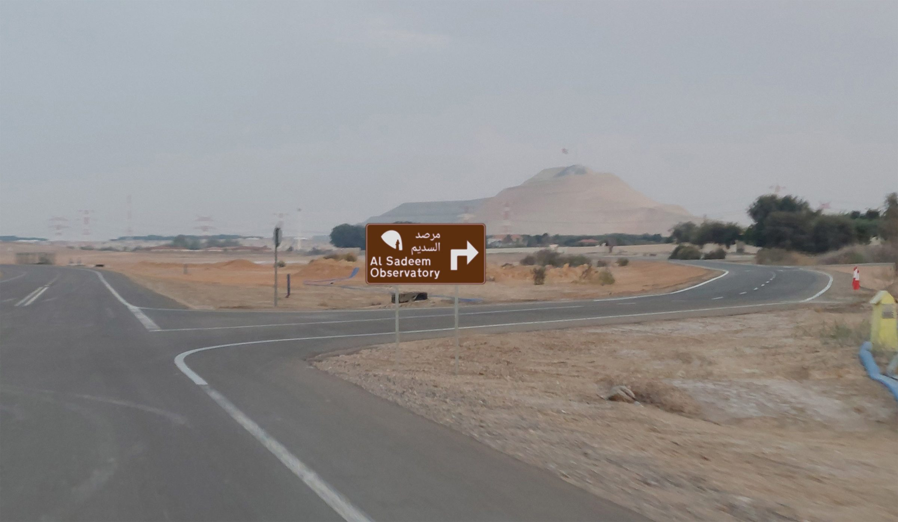

Al Sadeem
A wayfinding system proposal for an observatory in the desert of Abu Dhabi, UAE.

Role: Team Lead & Designer
Tools: Illustrator, Photoshop
Team
Fatema Alhameli, Designer
Shahd Ngim, Designer
Maisy Nelson, Designer
Course
Wayfinding
Goffredo Puccetti, Instructor
Al Sadeem Observatory is dedicated to making astronomy accessible through stargazing experiences and guided tours. Located in the desert of Abu Dhabi, Al Sadeem is essential in promoting astronomy education in the UAE.
In line with Al Sadeem’s mission to promote space and astronomy, my team was tasked with designing a proposal for a wayfinding system. This system was intended to improve ground navigation while adding to the visitor experience through placemaking. The designs aimed to blend functional clarity with the observatory’s education and exploratory atmosphere, guiding visitors through the site and fueling a connection to the cosmos.


Research & Planning
In planning signage placement, we relied upon satellite imagery, our observatory visit, and visitors' testimony. From all our research, we analyzed and identified decision points in the user journey when navigating and decided on what areas made the most sense to place a sign.



Signage Design
We divided navigation into two spaces: outside and within the observatory. We developed a flexible signage system for navigation within observatory grounds to accommodate different priorities, including identification, information, or world-building. Being in Abu Dhabi, we also acknowledged the need to design signs in both Arabic and English, paying attention to the diversity among visitors.